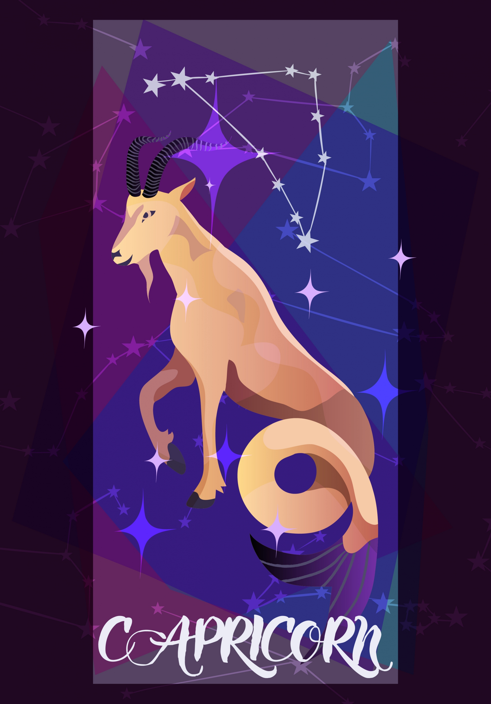

THE GOAT | DEC 22 - JAN 19
DETAIL-ORIENTED, INTELLIGENT, HARDWORKING
| Element: Earth | Polarity : Negative |
| Quality : Cardinal | Ruling Planet: Saturn |
| Spirit Color : Dark blue | Lucky Gem : Lapis lazuli |
| Flower : Pansy | Top Love Matches : Virgo |
| Ruling House : Tenth |
Smart, hardworking, and fully in control of their destiny, a Capricorn will always get what they set their mind to, in both personal and professional life—no excuses. Capricorns may get a reputation as stubborn, but they simply know what they want, and also know how they wish other people would behave.
Natural rule-followers, Capricorns thrive on order and love strict rules, hierarchies, and set ways to do things. Can a Capricorn think outside the box? Yes, they can, but they prefer when they have strict boundaries to constrain against—free reign can make them feel paralyzed by choice. Capricorns are great at climbing the corporate ladder, and especially adept at making (and investing) money. Capricorns love family, and put a lot of stock in traditions. A Capricorn might stress themselves out trying to do everything perfectly—a Capricorn may feel like they must present a home-cooked meal every day, and would never admit to doing drive-thru or takeout. Capricorns believe presentation is everything, and their homes are usually Insta-worthy. A Capricorn sometimes is overly focused on what things look like, instead of how things feel, which could cause them to feel stifled and unhappy.
Capricorn needs to find a firm sense of self beyond how others perceive them, and recognize that racking up achievements is only one small part of their personality. Capricorns are loyal friends, and have a funny and sly sense of humor when you get to know them—it is fun drawing them out of their shells. In love, Capricorn is a true partner, who is laser-focused on helping their partner find success and happiness. A Capricorn will dive into a relationship like a job, and believes that hard work can help make a bond as strong as possible. While sometimes a romantic conversation may veer toward feeling a bit like a board meeting, especially with action items and improvement plans, but if you roll with it, they have a point: Your bond will be stronger.
"I can succeed at anything I put my mind to."
Capricorn is intelligent, detail-oriented, and will not take no for an answer when they want something. Their hard working attitude is an inspiration to all, and they truly believe they can achieve anything with hard work. Capricorn is always ready to learn new skills, and sees something they don’t know—like changing a tire or boiling the perfect egg—as a challenge they must undertake. This attitude makes them a master of all trades, and they have esoteric knowledge that is impressive to all who know them.
Capricorns can be incredibly hard on themselves, and just as hard on other people. They can hold grudges and hold other people in their lives to impossible standards. Capricorns sometimes see one narrow way of doing something, and broadening their horizons and perspective can be incredibly helpful in giving them and others a break.
Their tenacity. They believe that they truly can do anything, and they will dig in and get it done, no matter how exhausting or tedious the task. Capricorn will stay up all night if necessary and are almost superhuman in terms of being able to ignore exhaustion and laser focus on the task at hand.
John Legend, Bradley Cooper, Kate Middleton, Liam Hemsworth, Michelle Obama, Ellen Degeneres